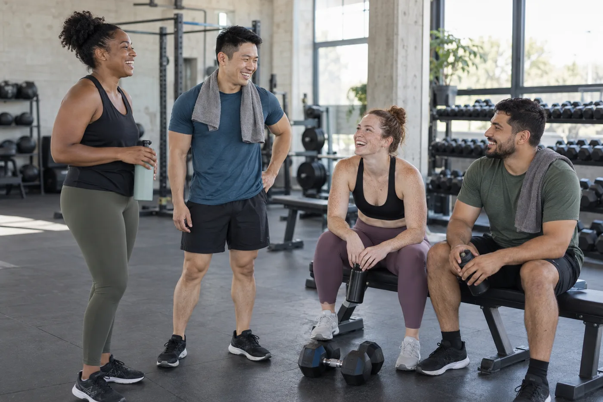

Make it manageable.
A clear week. A few considered sessions. Room to adjust when life does.
PERSONAL COACHING / BUILT AROUND YOUR LIFE
Not a before and after.
A way to show up for yourself.
 MAYA / YOUR COACH
MAYA / YOUR COACH
The best training plan is one you can come back to. We build around your time, your starting point and what you enjoy—not somebody else’s highlight reel.
A clear week. A few considered sessions. Room to adjust when life does.
Technique comes first. Confidence grows from understanding what you’re doing.
Progress is personal. We focus on consistency, not punishment.
FORM began as a simple idea: make the gym feel less like a test and more like a place you’re allowed to learn.
Maya is our fictional founder and coach. Her imagined practice centres on busy people who want a clearer relationship with training: parents finding an hour for themselves, desk workers who miss moving, and beginners who would like someone to explain the equipment without the noise.
There are no transformation deadlines here. The conversation starts with your schedule, equipment, confidence and boundaries. Training is adjusted through discussion, not assumed from a few answers on a website.
Fictional coach profile. No real qualifications, client outcomes or professional registrations are claimed.
A welcome conversation. A manageable programme. A place to ask the small questions. Clear notes about each session, and a weekly check-in to discuss what worked and what needs changing.
Coaching isn’t clinical care. Injury rehabilitation, diagnosis and individual dietary treatment belong with appropriately qualified professionals. A live service would screen for suitability before suggesting a programme.
START A CONVERSATION ↗A programme to follow at your own gym, with a weekly written check-in and a monthly video conversation. Best for people who want structure but don’t need a coach beside every session.
Time set aside for your questions, movement practice and confidence. An imagined Brisbane studio appointment, with the same coach from first conversation to review.
A 45-minute small-group format for up to six adults, with time to learn instead of racing the clock. Classes would be grouped by experience and suitability.
Illustrative service formats and timetable. No active memberships, class availability or payment processing.
A few choices. A clear starting point.
This is a sample
schedule, not personalised medical or exercise advice.
Discuss your experience, practical constraints and what you hope to get from training. Agree a realistic weekly schedule and identify questions that need a qualified health professional’s input.
Get familiar with the setting and the language of your programme. The first week is about understanding the plan and recording how it fits your life, not proving how hard you can work.
At the end of the month, review consistency, confidence and your own notes. Keep what is useful, change what isn’t, and agree the next manageable step together.

You don’t have to look a certain way to belong in a training space.
The imagined FORM community makes room for different backgrounds, bodies and levels of experience. Coaching language is respectful, progress photos are never required, and there is no leaderboard measuring one person against another.
Our concept studio has quieter appointment windows, a step-free entrance and a private changing space. In a live service, you’d discuss accessibility needs before arriving so we could be honest about the space and the support available.
AI-generated community scene, not real members or an endorsement.
Pick a time you can usually protect. Put the location and equipment you need beside it in your calendar. If your week changes, move the appointment rather than treating the entire plan as lost.
A training log can be simple: date, session name, what you did and what you’d like to ask next time. It gives a coach context without reducing your experience to a single number.
Unsure about an instruction, an unfamiliar machine or whether a session is appropriate for you? Pause and ask a suitable professional. These notes are organisational ideas, not exercise or medical prescriptions.
No. The concept is designed around different starting points. A live introductory conversation would establish your experience, confidence and suitable format before any training recommendation.
The sample schedule is only a structure. A real programme would be written around the equipment you can access, with its requirements clearly listed before you begin. This website does not assess your equipment or ability.
Not in this concept. FORM focuses on training organisation and coaching support. Individual clinical nutrition, diagnosis and rehabilitation require appropriately qualified professionals and are not services offered here.
A real membership would explain renewal, pauses and cancellation in writing before payment. There is no subscription behind this portfolio, and submitting the demo enquiry creates no obligation.
Tell us a little about your starting point. Try the enquiry flow without sending any data.